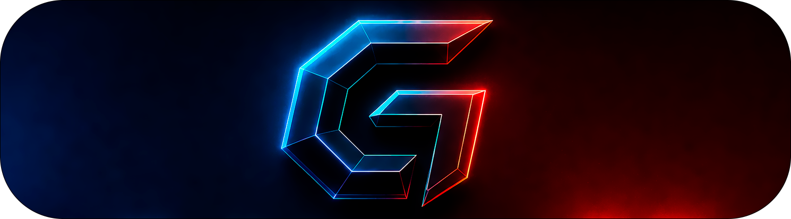

Bake Addon 2.1
A Blender add-on for faster game-ready asset work: hard-surface modeling fixes, auto UVs, high-to-low baking, bevel-shader baking, LODs, vertex color IDs, and export presets.
Recommended Workflow
Use Bake Addon as a short production pipeline: clean the mesh, unwrap it, name bake pairs, bake maps, then export for the target engine or texturing app.
- Model and clean hard-surface details with UnBevel, Offset, Easy Loop, Select Surface, and Boolean Cleanup.
- Use Auto UV Unwrap to create logical UV islands, then pack or adjust islands if needed.
- Use Auto Rename to pair high and low meshes with
_low,_high, and optional_cagesuffixes. - Create cages, choose bake settings, select the low meshes, and run MATRIX BAKE.
- Export as FBX, OBJ, GLTF, or the Substance Painter preset using the Export panel.
Modeling
The Modeling panel is for Edit Mode cleanup and fast hard-surface decisions. Most tools are also available from the radial menu.
UnBevel
Removes or reduces destructive bevels from selected edge rings or bevel face patches. Move the mouse left/right to change the amount; use the Edge Slide toggle when end vertices should slide along neighbors.
Bevel Select
Selects an edge ring from a starting edge, giving UnBevel a clean selection to work with.
Easy Loop
Extends an edge selection by angle. Move the mouse to adjust the threshold, then left-click to apply.
Select Surface
Selects connected faces by surface angle, not by topology alone. This is useful before vertex color IDs, trims, or cleanup.
Offset
Creates an offset cut around selected edge chains. In interactive mode, move the mouse to adjust width and scroll to adjust sampling.
Boolean Cleanup
Merges selected boolean cleanup loops to remove shading artifacts. Scroll to switch the fixed side; use F to flip and T to triangulate.
Bevel Shader
Bevel Shader gives objects a softer, more natural edge appearance without adding real bevel geometry. The result can be baked into normal maps for game engines.
Radius Presets
Create colored radius presets, set units, and assign different radii to selected objects or selected mesh elements.
Preview and Maintenance
Render Preview switches to a Cycles preview setup. Repair rebuilds missing material links, while Clean Selected and Clean All remove generated bevel data.
Tutorial note: you can bake high-poly geometry, Bevel Shader, or both together. This is useful when the final game asset needs rounded-looking edges without permanent high-poly bevels.
Auto Rename Tools
Auto Rename prepares selected meshes for baking by detecting low/high pairs and moving them into the correct collections.
Pair Detection
Objects can be matched by bounding box, pivot position, or both. Poly count decides which object becomes low and which becomes high.
Rename Modes
Numerical names pairs as numbers. High -> Low keeps the high-poly base name. Low -> High keeps the low-poly base name.
Collections
Matched meshes are moved to Low and High. Cages can be renamed and moved to Cage when they match the low mesh.
Auto UV Tools
Auto UV uses MinistryOfFlat on Windows to create smart UV cuts. It is intended to produce logical islands instead of many tiny Smart UV Projection islands.
Setup
Use Download MinistryOfFlat or set the official zip path. The add-on caches the executable from the zip.
Auto UV Unwrap
Select mesh objects in Object Mode, or selected faces in Edit Mode, then run Auto UV from the panel or radial menu.
Manual UV Tools
Average island scale, pack UVs, mark MOF seams, unwrap, and select stretching interactively.
The default MOF settings are tuned for hard-surface use. Open Auto UV Settings only when you need special grouping, density, seam, or packing behavior.
Bake and Matrix Bake
Baking is the central feature. Matrix Bake lets you bake many separate meshes at once without manually merging everything into one object.
Bake Configuration
Choose map type, resolution, normal format, samples, margin, GPU use, optional anti-aliasing, and output format/folder.
High-to-Low Settings
Create cages with an offset, enable cage projection or ray distance, and use ray visualization to see the projection range.
UV Transfer
Optionally bake from one UV channel to another, useful when combining multiple objects into one shared texture space.
PurePlay ORD Preset
Exports BaseColor with material alpha, Metallic, DirectX Normal, and packed Occlusion/Roughness/Displacement PNG maps. ORD uses R/G/B channels respectively. Disable AO Map to fill the complete AO channel with white.
Scenario 1: No Suffix
An unsuffixed selected mesh is treated as a low-only mesh and baked by itself.
Scenario 2: _low + _high
Selected _low meshes bake from matching _high meshes. Multiple pairs can be baked together.
Scenario 3: Hybrid
Some selected meshes can have high-poly partners while others bake as low-only. Matrix Bake detects the mix automatically.
Multiple Materials saves one baked image per material instead of one combined map. No Skew is an advanced normal-bake helper for reducing stretching around sharp cage areas.
Bake Explode
Bake Explode stores object transforms so you can move parts apart for cleaner baking, then return them to their original positions.
Transform Storage
Store saves selected mesh transforms. Reset toggles between stored and alternate positions. Clear removes stored data.
Visualization
The eye button shows ghost meshes and arrows so stored positions are easier to understand.
Linked Duplicates
Hide Same Data hides linked duplicates while keeping one visible, and Unhide All restores them.
Vertex Color Tools
Vertex Color Tools help create ID colors for texturing workflows such as Substance Painter.
Apply Custom Color
Pick a color and apply it to the selected mesh part in Edit Mode.
Random Color
Apply a unique random color to the current selection for quick ID separation.
Select by Color
Select mesh regions that already share the same vertex color.
A common workflow is Select Surface, then Random, then bake or export an ID map for material assignment.
LOD Generator
LOD Generator creates game-engine-friendly LOD objects and collections from selected meshes.
Levels
Choose how many LODs to generate. The original object becomes _LOD0.
Ratio Mode
Set each LOD as a percentage of the original triangle count. For example, 0.5 targets roughly half the triangles.
Target Tris Mode
Enter a triangle target for each LOD level when you need fixed budgets.
Generated objects are named with _LOD0, _LOD1, and so on, then placed into matching LOD0, LOD1 collections.
Trim Sheet Tools
Trim Sheet tools live in the Image Editor sidebar under Bake Addon 2.1, with Trim Scale also available in the radial menu.
Trim Sheet
Create, draw, import, export, edit, and assign trim regions. Assignment settings can unwrap, orient, stretch-fill, and map faces or islands to trims.
Materials to TrimSheet
Generate a trim-sheet atlas from selected material UVs. Choose atlas size, padding, layout, maps to bake, normal format, samples, GPU use, and output path. PREVIEW displays the final packed material rectangles in UV space before baking; trims used by the selected faces are highlighted orange while other trims remain neutral grey. Layout settings and the priority slider update it automatically. Preview is off by default and never changes mesh data. While active, it hides Image Editor overlays so source UV islands do not obscure the trim rectangles, then restores each editor's exact previous overlay state when disabled. Exported map filenames automatically use the active object's clean name: both Cube and Cube_BeforeTrimBackup produce Cube_BaseColor.png. The generated atlas material uses that same clean object name. Generated-trim suffixes and invalid filename characters are removed safely. After a successful conversion, the preserved tagged source/backup is hidden with its viewport eye while the generated working object remains available. The PurePlay ORD preset exports BaseColor, Metallic, DirectX Normal, and one packed Occlusion/Roughness/Displacement map (R/G/B). Its AO Map checkbox controls the red channel; when disabled, AO detection and baking are skipped and the complete red channel is white. Active Material Trim Priority shows only the active face material and provides a −5.0 to 5.0 slider with one-decimal values. Changing it applies the same priority to every material represented by the selected faces, including all materials when all faces are selected. With no selected faces, it affects only the displayed active material. The centered 0.0 default is normal size; the endpoints smoothly reach one-fifth and five times the normal pixel area without changing image aspect ratio. Its non-interactive dot transitions from blue through green at 0.0 to red. Every generated working mesh contains one active/render UV channel named UVMap; original and backup meshes keep their source UV channels unchanged.
Export and Smart Apply
The Export panel handles game-engine and texturing output, while Smart Apply prepares transforms without breaking common modifier setups.
Export Methods
Export grouped by parent, one combined file, one file per object, grouped by collection, or Substance Painter mode.
Formats and Targets
Export FBX, OBJ, or GLTF. FBX includes Unity, Unreal, and Unity PreRotated target settings.
Export Options
Merge meshes, delete materials, triangulate, apply location/rotation/scale, set custom names, choose custom folders, and open the export folder.
Substance Painter Mode
Uses tuned FBX export settings for texturing, including Substance-focused triangulation behavior.
Smart Apply
Applies location, rotation, or scale to selected mesh objects and can keep Array and Mirror modifiers visually consistent after applying transforms.